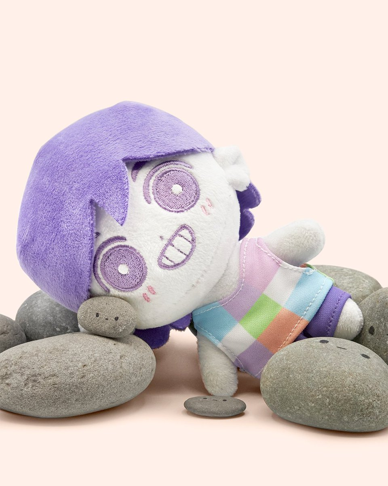
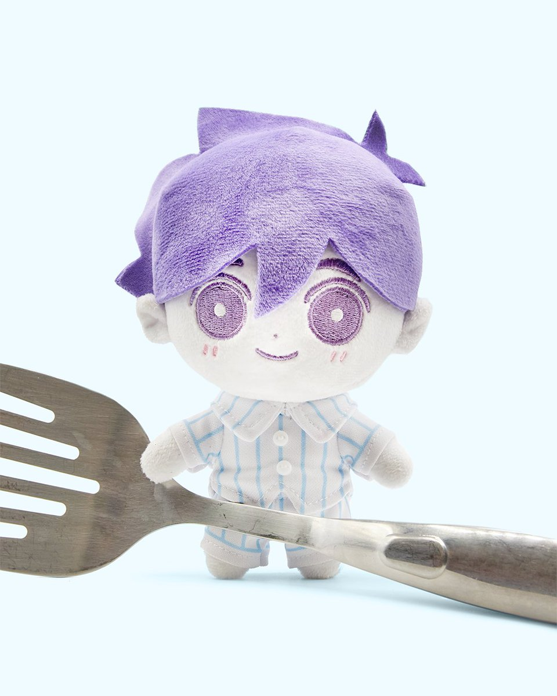
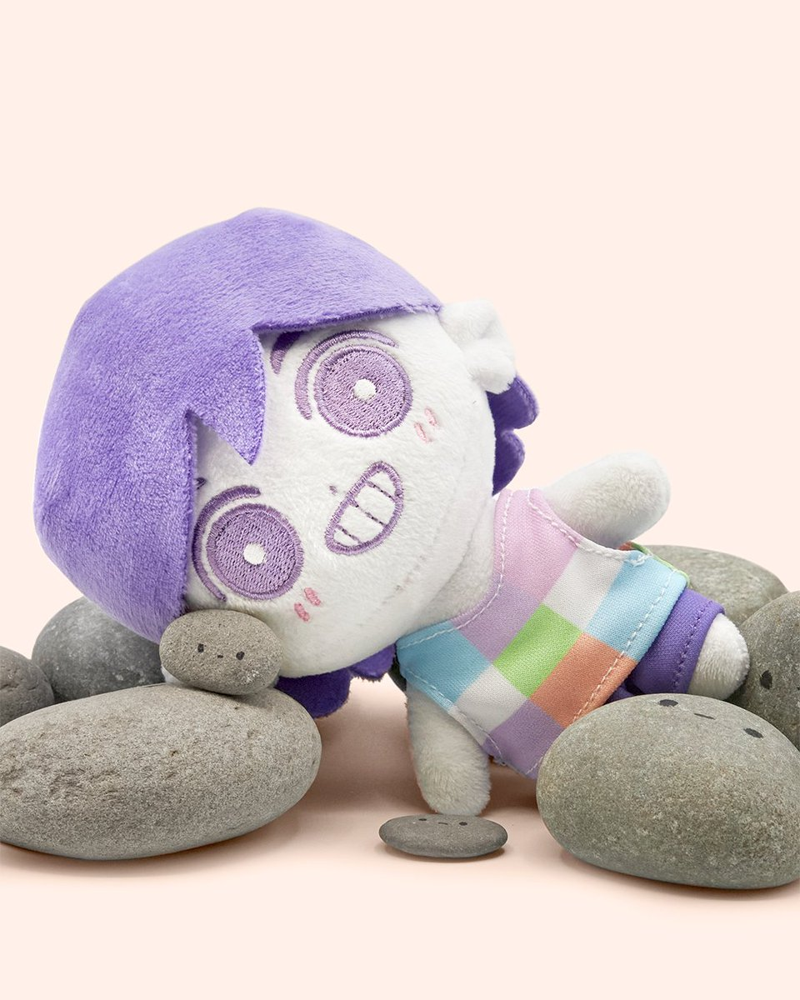
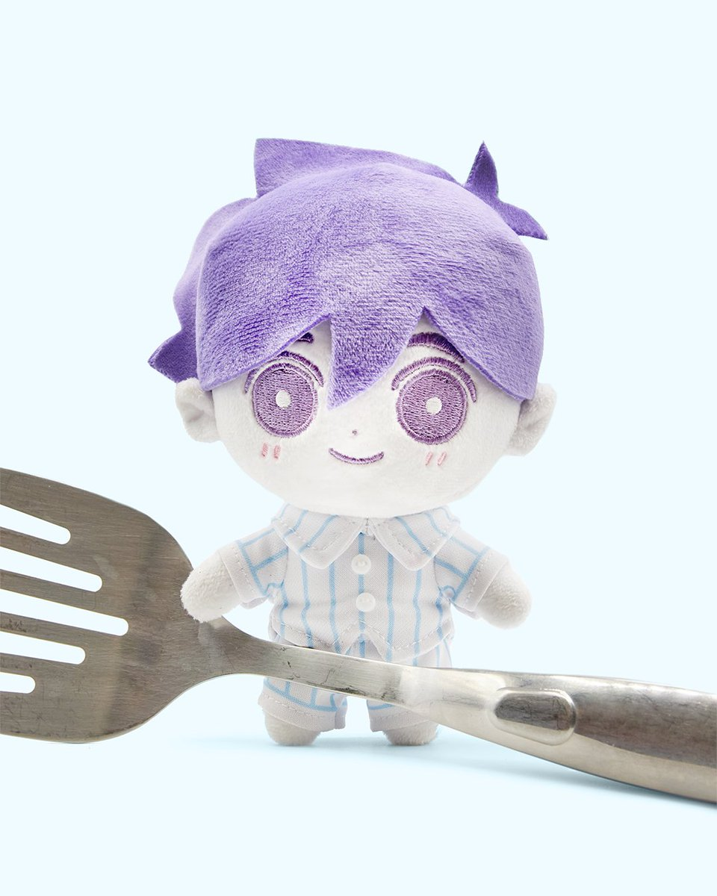
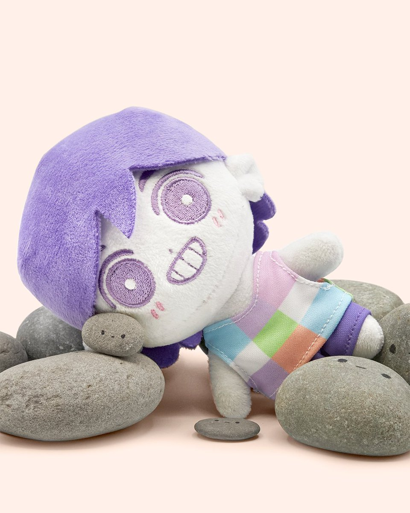
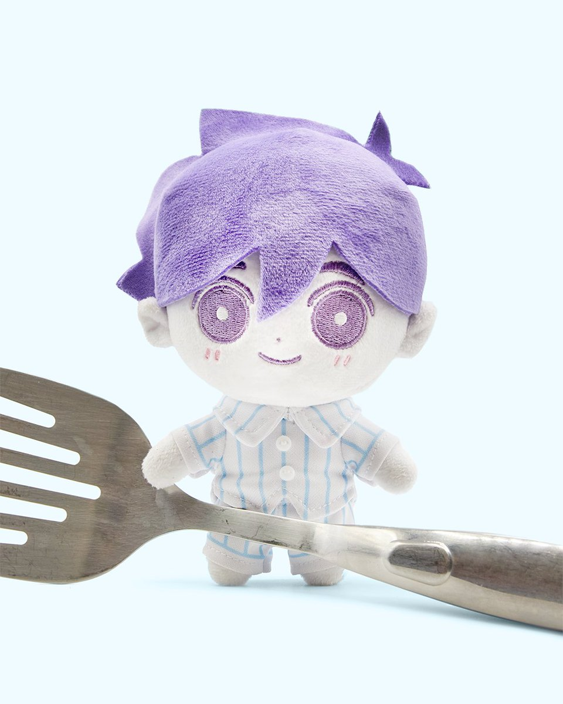

ahh!
My name is [___] i use they/them pronouns
fish
love
me
women
fear me
OOOOOAAAAAAAAAAHHHHHHHHHHHHH
buy this for me


Favorite games
Omori
Animal Crossing New Horizons
Stardew Valley
Genshin Impact
 


